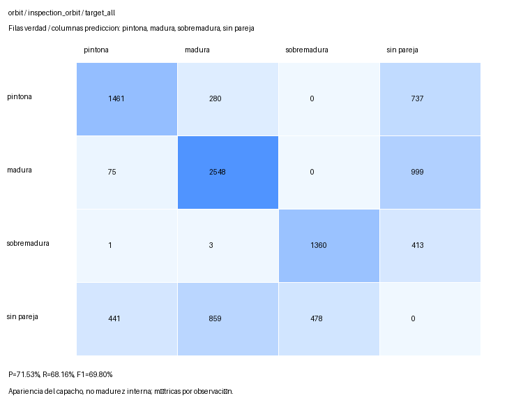
627 fotogramas capturados y evaluados. Legacy y vertical tienen video completo con recuadro revisado en este paquete. El PiP orbital y la localizacion 3D siguen pendientes. La campana no esta cerrada.
Mismas plantas, entorno y modelo multiescala congelados; inferencia RGB publica exhaustiva con parches 640, stride 448 y entrada 960. Confianza 0,25 e IoU de mascara 0,50. El objetivo C06/C07 se atribuye solo en el evaluador privado; no es una ROI automatica del estimador. P/R/F1 son metricas a umbral fijo, no mAP.
Presupuestos diferentes: legacy 10 s, vertical 8,5 s, orbita parcial 21,25 s. No son las mismas observaciones ni una comparacion de tiempo igualado.
| Ruta / alcance | Precision | Recall | F1 | Observaciones incluidas / total | Cambios ID / pares emparejados | Cobertura de pares |
|---|---|---|---|---|---|---|
| Legacy / Objetivo, todos | 70,45% | 51,10% | 59,24% | 3579 / 3579 (100,00%) | 836 / 1653 | 53,63% |
| Legacy / Objetivo, elegibles | 63,46% | 88,10% | 73,78% | 1319 / 3579 (36,85%) | 580 / 1054 | 94,11% |
| Barrido vertical / Objetivo, todos | 72,45% | 67,53% | 69,91% | 2781 / 2781 (100,00%) | 1242 / 1511 | 66,80% |
| Barrido vertical / Objetivo, elegibles | 71,75% | 79,86% | 75,59% | 2239 / 2781 (80,51%) | 1186 / 1447 | 79,81% |
| Orbita parcial / Objetivo, todos | 71,53% | 68,16% | 69,80% | 7877 / 7877 (100,00%) | 2785 / 4490 | 66,24% |
| Orbita parcial / Objetivo, elegibles | 70,87% | 80,25% | 75,27% | 6375 / 7877 (80,93%) | 2618 / 4272 | 79,82% |
Elegible: al menos 100 pixeles visibles y lado minimo de caja 8 pixeles; criterio de ingenieria, no limite universal YOLO. Las cifras cuentan observaciones por fotograma, no frutos unicos. Area visible no es oclusion. Cambios de ID condicionados a parejas espacialmente emparejadas; no son IDF1, HOTA ni MOTA.
| Ruta / alcance | Sin deteccion emparejada | Clase incorrecta emparejada | Pintona a madura | Madura a pintona |
|---|---|---|---|---|
| Legacy / Objetivo, todos | 1554 | 196 | 126 | 64 |
| Legacy / Objetivo, elegibles | 59 | 98 | 60 | 35 |
| Barrido vertical / Objetivo, todos | 785 | 118 | 78 | 36 |
| Barrido vertical / Objetivo, elegibles | 343 | 108 | 72 | 33 |
| Orbita parcial / Objetivo, todos | 2149 | 359 | 280 | 75 |
| Orbita parcial / Objetivo, elegibles | 934 | 325 | 257 | 67 |
La columna sin deteccion emparejada incluye ausencia de propuesta o desacuerdo de mascara por debajo de IoU 0,50; no identifica por si sola una causa. Las confusiones de clase requieren coincidencia espacial. Las diferencias de tamano y perspectiva son hipotesis explicativas, no causalidad aislada por este experimento.
| Ruta / fase | Frames | Precision objetivo | Recall objetivo | F1 todos | F1 elegibles |
|---|---|---|---|---|---|
| Legacy / Transito | 131 | 75,02% | 51,49% | 61,06% | 75,69% |
| Legacy / Toda la ruta | 178 | 73,70% | 51,98% | 60,97% | 75,34% |
| Barrido vertical / Transito | 126 | 75,77% | 55,93% | 64,36% | 75,21% |
| Barrido vertical / Toda la ruta | 167 | 74,66% | 59,08% | 65,97% | 75,46% |
| Orbita parcial / Transito | 190 | 76,75% | 55,96% | 64,73% | 76,31% |
| Orbita parcial / Toda la ruta | 282 | 74,53% | 60,34% | 66,69% | 75,89% |
Duraciones totales: 44,5 / 41,75 / 70,5 s. Incluyen 1,75 s de adquisicion/retorno cada una. Orbita parcial: 180 grados transitables en C06 y 225 en C07; sectores bloqueados conservados, sin mover plantas u obstaculos. Unico ArUco8 frontal comun: lado codificado 20 cm, marco 26,67 cm; C07 no tiene marcador propio. Decodificarlo no equivale a estimar ni validar pose metrica de los capachos.
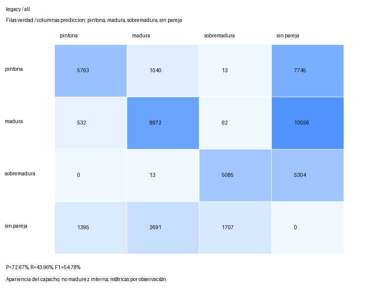

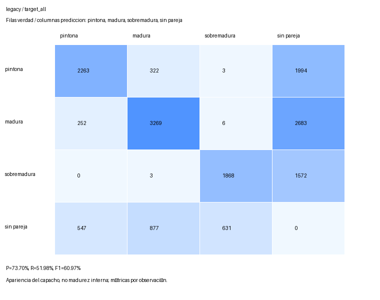


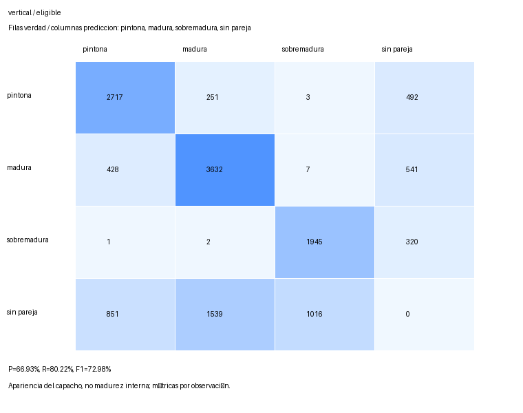
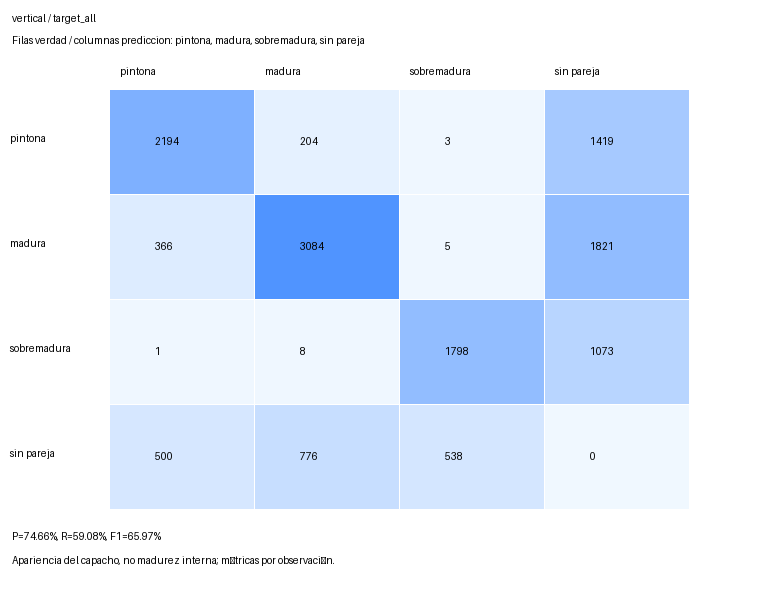
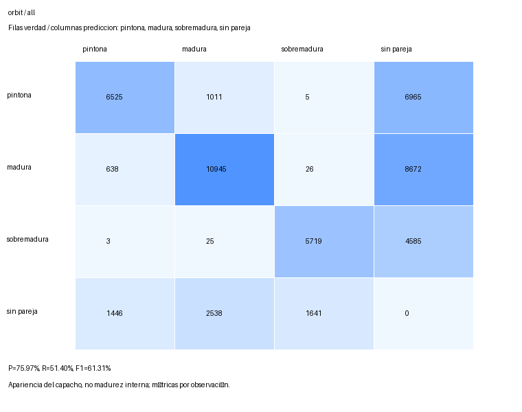
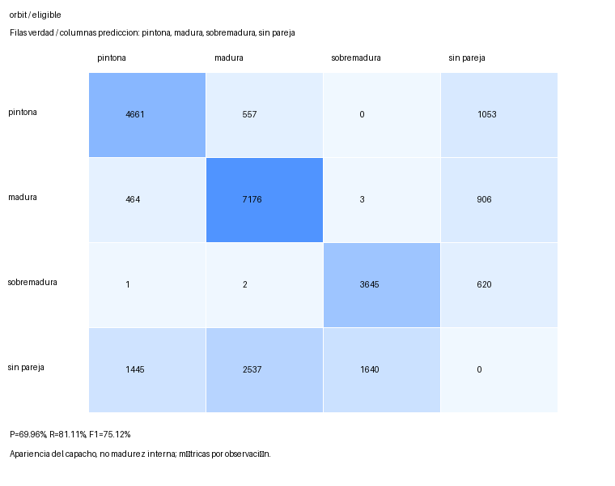
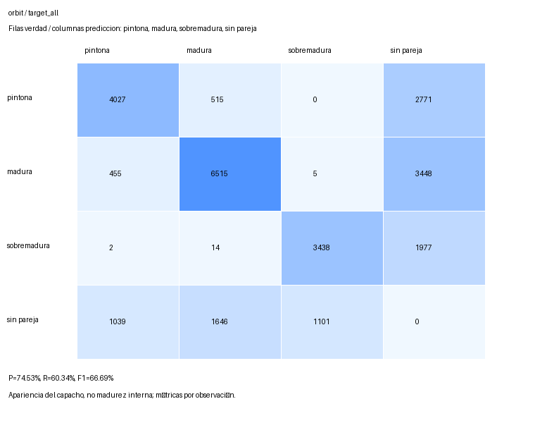
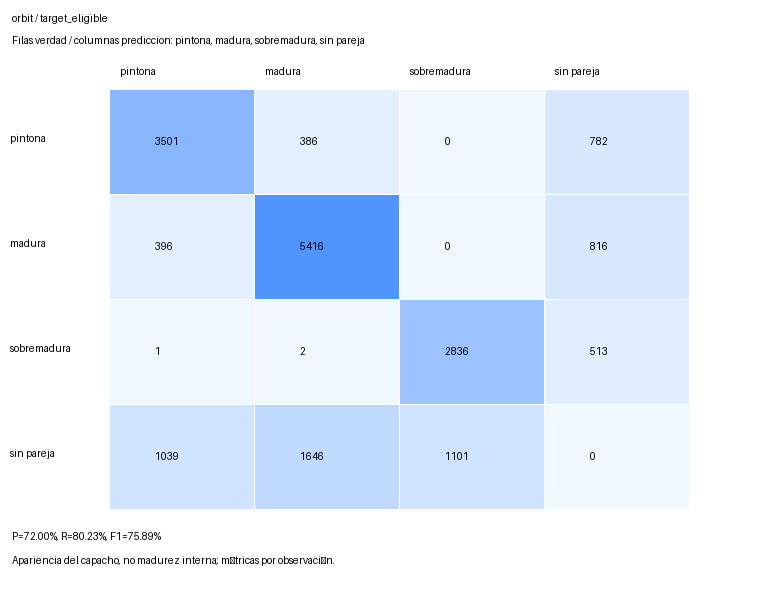
Peor, mediana inferior y mejor F1 del objetivo en inspeccion, seleccionados por la regla predeclarada. Empates por indice ascendente. No son vistas de camara identicas entre estrategias. Colores de superposicion: IDs de seguimiento, no clases.
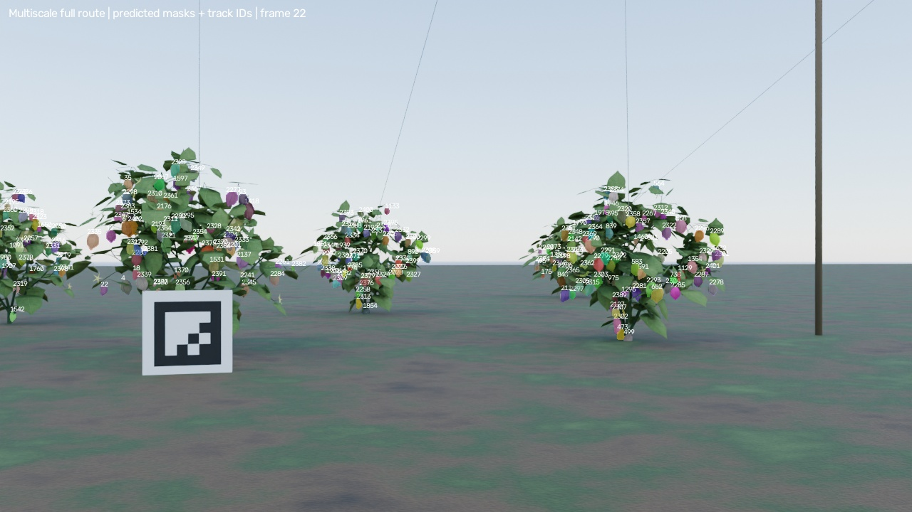
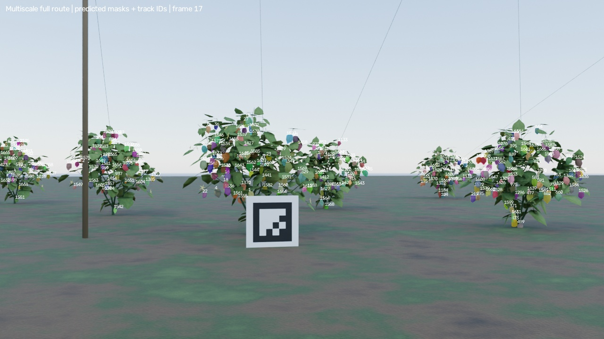
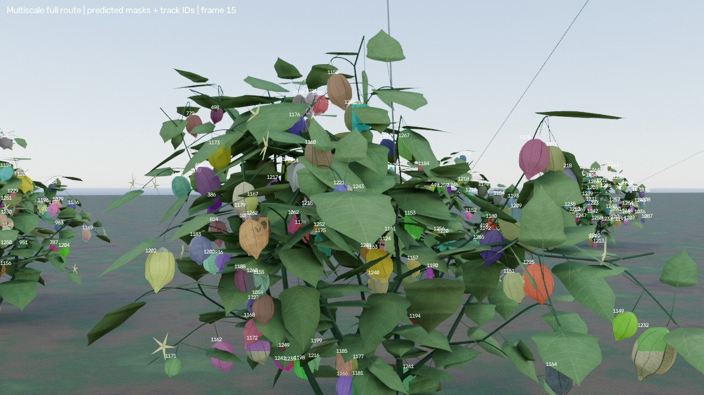
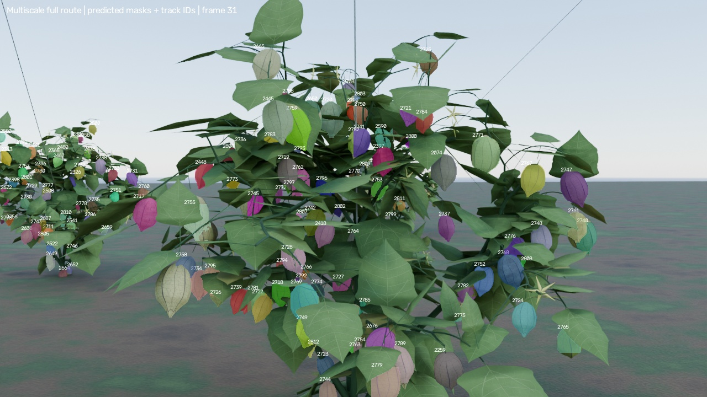
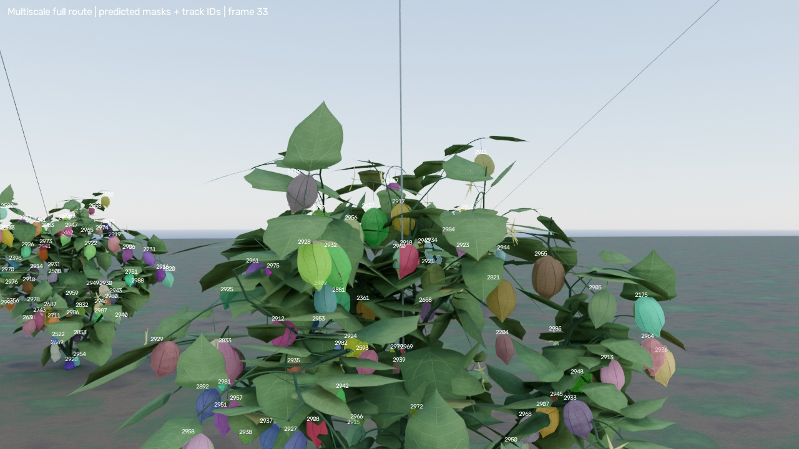
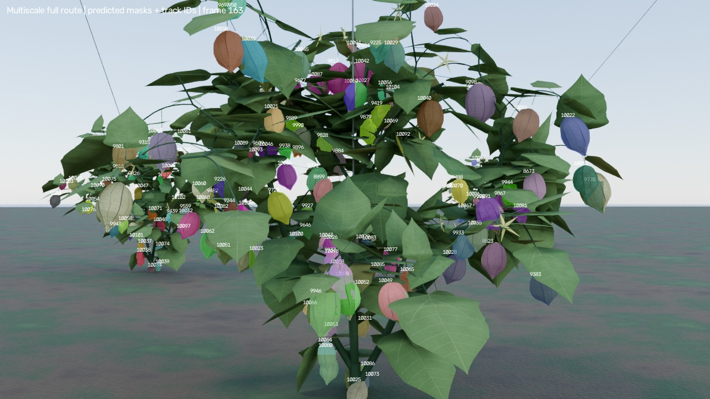
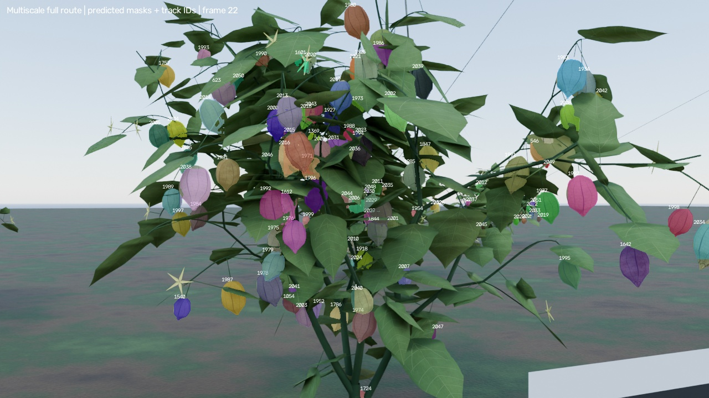
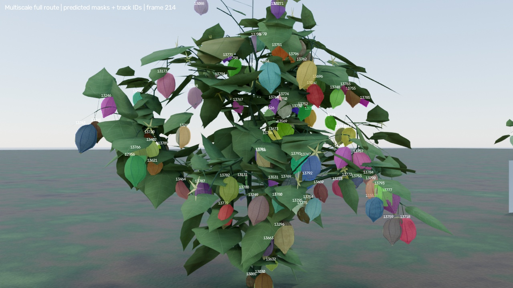
FP del objetivo sin pareja atribuidos aproximadamente por centroide dentro de su envolvente visible privada, despues del matching global; vecinos emparejados excluidos, sin rematching favorable. No hay estimacion metrica nueva ni promocion a produccion. Clases de apariencia del capacho, no madurez interna; escena sintetica y topologia compartida.
Recibo y hashes · Seleccion resuelta · Auditoria orbital · Comparacion anterior conservada